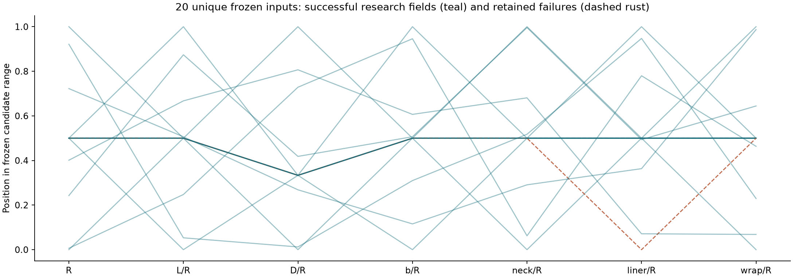
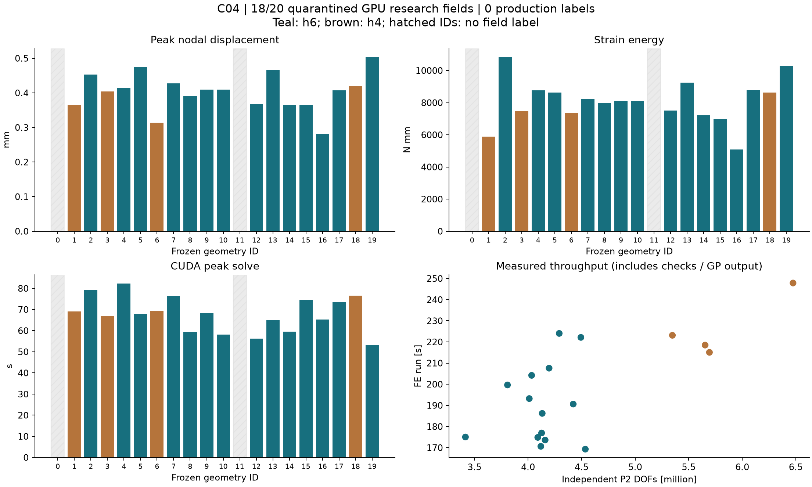

01
验收 / 总结 / 介绍
C04 小批量研究试跑完成：20 个冻结几何中，18 个完成真实三维 GPU-FEniCSx P2 及原始字段检查，2 个保留失败；全部成功算例可打开三维 BC / 载荷。
C04 小批量研究试跑完成：20 个冻结几何中，18 个完成真实三维 GPU-FEniCSx P2 及原始字段检查，2 个保留失败；全部成功算例可打开三维 BC / 载荷。
项目生产放行记录仍为 0；SICN≥0.05 与逐材料区体积误差≤0.1% 是原项目筛选门槛，并非行业统一标准。新增失败诊断：首轮 Netgen 访问异常，复现捕捉 Relocate3D 诱发翻转；固定种子单线程对照可重复。薄胶层、极区补强与曲面离散仍需修复，诊断不等于修复验收。
092固定完整CAD、仅移动内部节点的修复已通过全部原网格筛查(887.32秒)：187倒置/540低SICN归零，minSICN0.0500662，最大CAD节点偏差3.60e-7mm，材料体积误差max0.0266675%，容量通过。已独立冻结并建立8阶精度研究队列；未生成新GPU场，51.8%局部应力hold和生产0保留。
已补充 0000 / 0011 的原始失败日志、8 次分阶段建网记录，以及 0002 / 0018 的低质量单元分布。已捕捉 Relocate3D 诱发负雅可比的实例；固定种子单线程对照可重复，但尚未完成修复验收。补强薄过渡和直边面片的曲面表达误差仍需处理。
本次仅新增诊断，原 20 输入 / 18 研究场 / 2 失败记录保留。原筛选门槛是项目要求，不是行业统一标准；没有新增生产放行标签。
建议先试跑 20–50 个几何
建议先试跑 20–50 个几何
核对数据字段和样本对应关系，确认后启动批量任务
项目生产放行记录仍为 0；SICN≥0.05 与逐材料区体积误差≤0.1% 是原项目筛选门槛，并非行业统一标准。新增失败诊断：首轮 Netgen 访问异常，复现捕捉 Relocate3D 诱发翻转；固定种子单线程对照可重复。薄胶层、极区补强与曲面离散仍需修复，诊断不等于修复验收。
20 个不同几何在求解前冻结。原始 18 件 CAD 与修订版 12 材料区分区均保留；通口 1 微米接口对齐另行版本化，逐件体积变化均低于 0.1%。本轮共 27 次建网尝试，得到 18 个不同几何的实际 GPU P2 研究场。重试沿用原输入 ID，不计为新几何。
3 个首轮失败为 Netgen DLL 访问冲突，另 4 个为建网失败。安全优化与 h4 重试恢复 5 个；0000、0011 的后续网格为非正 Jacobian，保留日志且不求解。不能将优化器崩溃归类为 CAD 设计无效。

矩阵/向量为 seqaijcusparse / seqcuda；P2 含独立中边自由度，使用精确嵌入的 P1 CUDA GAMG。CPU 建网、组装与积分点输出；微型最终 SVD 在 CPU。1 MPa 内压加该网格实际孔口多边形端力，下端仅 3–2–1 六自由度定位，没有整端固定、墙面或铰链。
所有 18 例原始节点/单元 ID、参数、网格/合同/源码哈希对应一致，保留原单元 14 点局部应力 [Ncell,14,6]、分材料信息及实际压力/两端力向量。逐例通过残差、力/力矩、能量、半载/零载及原始载荷重建检查。最大真实相对残差 1.77e-10，最大载荷重建相对差 2.98e-14。18 例不包含独立参数化验证用的 C03 几何。
三通道版本化执行的实际墙钟约 70.1 分钟；单个 CUDA 通道按依赖顺序使用。20 个加载卸载显示状态来自经过检查的线弹性缩放，不是 20 次非线性积分。

| 输入 ID | h mm | P2 自由度 | 最大 U mm | 应变能 N·mm | 真实残差 | FE 总耗时 s |
|---|---|---|---|---|---|---|
| copv_c04_0001 | 4.0 | 5,347,872 | 0.365232 | 5881.814 | 1.02e-10 | 223.1 |
| copv_c04_0002 | 6.0 | 4,493,352 | 0.452654 | 10830.265 | 1.04e-10 | 222.2 |
| copv_c04_0003 | 4.0 | 5,693,805 | 0.404016 | 7455.689 | 1.03e-10 | 215.1 |
| copv_c04_0004 | 6.0 | 4,291,002 | 0.414254 | 8760.367 | 1.02e-10 | 224.0 |
| copv_c04_0005 | 6.0 | 4,421,859 | 0.473883 | 8618.142 | 1.11e-10 | 190.6 |
| copv_c04_0006 | 4.0 | 5,653,659 | 0.313539 | 7379.664 | 1.01e-10 | 218.5 |
| copv_c04_0007 | 6.0 | 4,196,418 | 0.426996 | 8236.096 | 1.77e-10 | 207.6 |
| copv_c04_0008 | 6.0 | 4,090,764 | 0.391586 | 7985.360 | 1.03e-10 | 174.9 |
| copv_c04_0009 | 6.0 | 4,011,528 | 0.409130 | 8108.103 | 1.60e-10 | 193.2 |
| copv_c04_0010 | 6.0 | 4,159,359 | 0.409234 | 8108.472 | 1.02e-10 | 173.6 |
| copv_c04_0012 | 6.0 | 4,119,492 | 0.367725 | 7504.974 | 1.03e-10 | 170.6 |
| copv_c04_0013 | 6.0 | 4,132,215 | 0.465448 | 9252.192 | 1.05e-10 | 186.2 |
| copv_c04_0014 | 6.0 | 4,126,647 | 0.364555 | 7212.961 | 1.03e-10 | 176.9 |
| copv_c04_0015 | 6.0 | 4,033,497 | 0.364305 | 6983.753 | 1.02e-10 | 204.2 |
| copv_c04_0016 | 6.0 | 3,415,239 | 0.282483 | 5087.589 | 1.01e-10 | 175.0 |
| copv_c04_0017 | 6.0 | 3,808,026 | 0.407269 | 8781.479 | 1.07e-10 | 199.6 |
| copv_c04_0018 | 4.0 | 6,474,318 | 0.418877 | 8629.685 | 1.01e-10 | 247.9 |
| copv_c04_0019 | 6.0 | 4,534,908 | 0.503213 | 10282.389 | 1.04e-10 | 169.3 |
全部 18 个成功几何均可在上方切换到实际 GPU 场，保留三维圆柱/圆锥 BC 与载荷符号；表面、剖面及材料边界拓扑不删减。网页 U / 应力使用记录误差上限的显示压缩，原始 64 位场与积分点数据在本地保留，不作生产训练释放。每例 manifest 记录显示压缩误差；应力颜色为原单元积分点均值，不跨材料或铺层平均。
研究字段链与小批量审核完成。生产网格门槛未通过，生产标签为 0；局部应力峰值及强度不作认证。C05 扩大数据量前须先修复薄层/极区网格并重新通过原门槛。不同几何只比较响应与耗时，不做最近节点配对或跨域伪逐点误差。
正在读取记录…